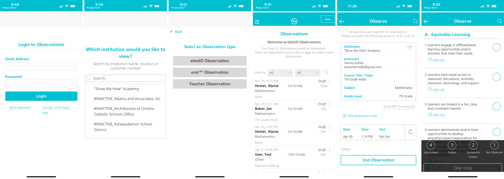
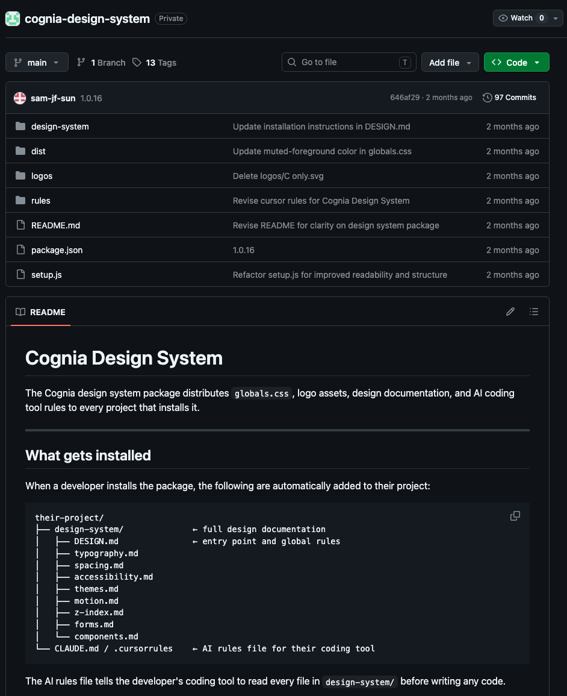
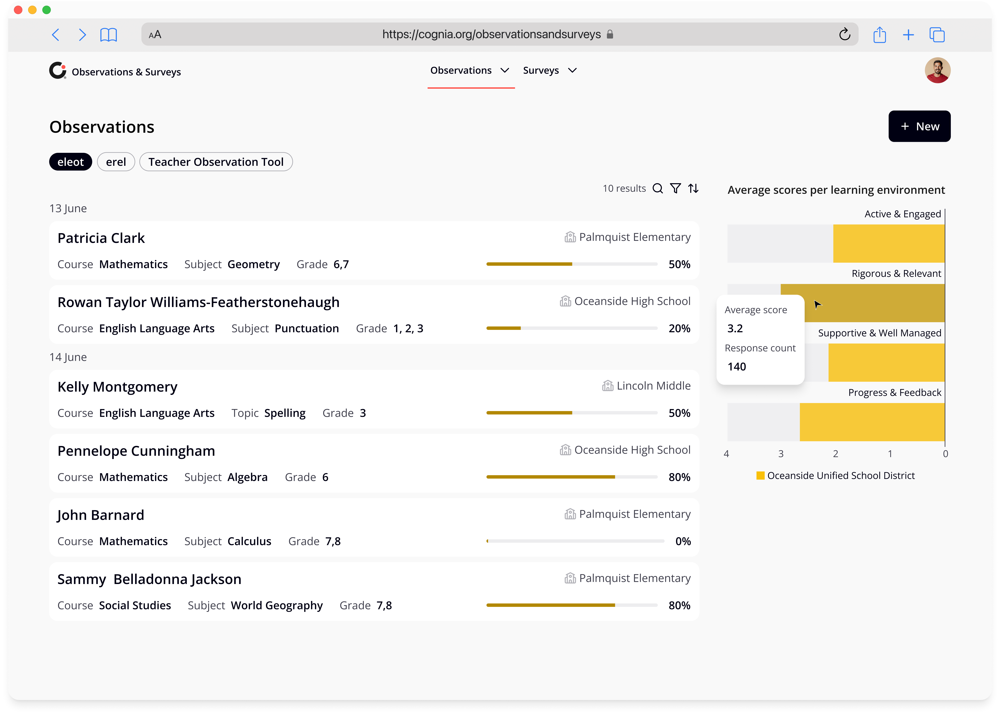
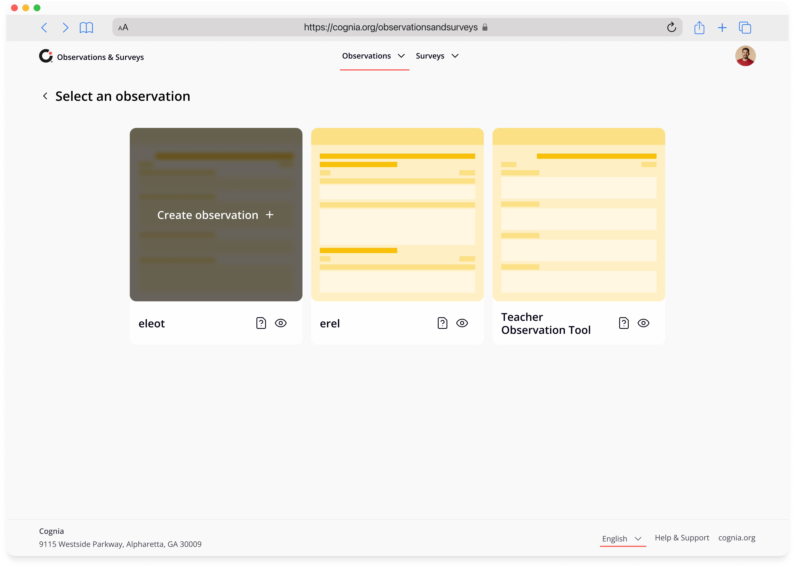

Conducting classroom observations across selected institutions
External evaluators visit classrooms to assess student and teacher performance for institutional accreditation. The observation app provides them with an intuitive interface to document findings in real-time, ensuring accurate assessments without the friction of cumbersome workflows.
Figma mockups showing an improved UX/UI. Later, the brief evolved to migrating the app like-for-like to a newer tech stack, where any design would be additional effort on our side.
My Impact
External evaluators and school-based observers struggle with an outdated and cluttered interface when documenting classroom observations. During live classroom assessments, they must quickly capture student behaviours against predefined criteria while events unfold in real-time. The current app's visual clutter slows them down, creating frustration and cognitive load. When the interface gets in the way, evaluators risk missing important behaviours or recording incomplete information, compromising the accuracy of their assessments.
Requirements Gathering
We had the opportunity to meet with several subject matter experts to gather their insights and requirements. During our discussions, we aimed to fully understand the challenges they are currently facing with the observation app.
Reviewing Existing Screens
We were provided with screenshots of the existing app, and it became clear that it felt quite outdated. The dense text and lack of visual hierarchy are significant issues that we needed to address to enhance the user experience.

Merging Two Apps
Another app, built separately from the observation app, serves the same purpose but is used by a different audience. Our goal was to integrate this app into the observation app for centralised data capture.

User Flow
Mapping the user journey provided valuable insights into how observations are conducted in the classroom. It was essential to grasp the review flow and its connection to the observation process, especially as we prepare for the integration of the apps.


Prototyping Designs
To effectively communicate with our client, we created a prototype in Figma. This allows stakeholders to quickly understand the proposed concepts and provide timely feedback. The new design features a more accessible colour scheme from the Cognia brand, promoting a modern and clean aesthetic. Interactions are more intuitive, guiding users seamlessly from the start.
Project Paused
Like many projects in the real world, this one was paused as other features took priority. By the time we returned to it, the colour and brand needed to be updated to stay aligned with Cognia's evolving identity.
Experimenting with AI
As an experiment with AI, I attempted to rather create the updated observation app in Claude Code. The live prototype was built in Next.js using shadcn components to match the current dev environment, versioned in GitHub and deployed through AWS. I also created my own npm package to house the CSS styling exported from Figma, alongside design rules documented in markdown files.

Blurring Design and Development
With a designer now prototyping in real code, using the same tech stack as developers, I got curious about how far that responsibility could bleed into development. Instead of reviewing a developer's code during QA, could we just adjust the UI ourselves? Unfortunately, having a designer spend that much time in the codebase wasn't well received given our tight timelines. Still, it was a lesson learnt: perhaps someday AI can streamline the workflow between designers and developers, cutting down the back-and-forth of QA reviews.
Back to Figma
I reverted back to Figma, designing updated screens for Observations and enhancing the UI to also be desktop focused.


Design and Dev Misalignment
Unfortunately, design and development were not aligned due to time constraints, leaving us yet again with a mismatch between the intended design and the shipped output.


Current State
The requirement was to migrate the app like-for-like onto a newer tech stack, so from a development perspective, the initial release was successful. Next steps are for the team to start implementing the UI/UX changes based on my detailed review.